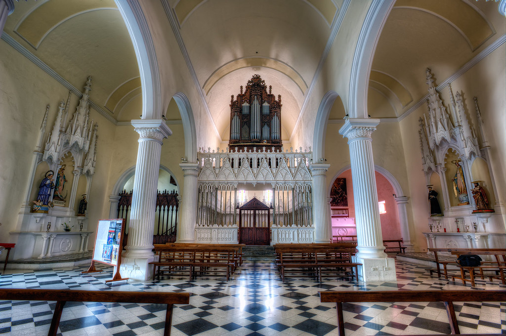

Музыка · 42-бөлім · Пернелі аспаптар Music · Section 42 · Keyboards Музыка · Раздел 42 · Фортепиано и клавишные
🎹 Фортепиано және пернелі аспаптар
🎹 The Piano and Keyboard Instruments
🎹 Фортепиано и клавишные
Рояль, пианино, орган, клавесин — дыбыс пернелерді басумен туады. Grand piano, upright, organ, harpsichord — the sound is born by pressing keys. Рояль, пианино, орган, клавесин — звук рождается нажатием клавиш.
🎹 Пернелі аспаптар деген не 🎹 What Are Keyboard Instruments 🎹 Что такое клавишные
Пернелі аспаптарда дыбыс пернелерді (клавиштерді) басумен шығарылады. Бір қатарда орналасқан перне саусақпен басылады — ал ішкі тетік дыбысты тудырады. In keyboard instruments sound is produced by pressing the keys. A finger presses a key in the row — and an inner mechanism makes the sound. У клавишных инструментов звук извлекается нажатием клавиш. Палец нажимает клавишу в ряду — а внутренний механизм рождает звук.
🎧 пернелерді басып, гамманы тыңдаңыз — содан соң органның созылмалы дыбысын естіңіз tap the keys and play the scale — then hear the organ's sustained sound нажимайте на клавиши и сыграйте гамму — затем услышьте тянущийся звук органа
🎼 Фортепиано және орган 🎼 The Piano and the Organ 🎼 Фортепиано и орган
Фортепиано — ішекті-пернелі The Piano — strings & keys Фортепиано — струнно-клавишный
Пернені басқанда балғашық ішекті соғады — осылай дыбыс туады. Атауы «форте-пиано» = «қатты-ақырын»: қатты да, ақырын да ойнауға болады. When a key is pressed, a hammer strikes a string — that makes the sound. Its name "forte-piano" means "loud-soft": you can play both loudly and softly. При нажатии клавиши молоточек ударяет по струне — так рождается звук. Название «форте-пиано» = «громко-тихо»: можно играть и громко, и тихо.
РояльGrand pianoРояль
қанат тәрізді, үлкен, концерттікwing-shaped, large, for concertsкрыловидный, большой, концертный
ПианиноUprightПианино
тік, үйге арналғанvertical, for the homeвертикальное, домашнее
📌 Әдетте 88 перне, 7 октавадан астам — барлық оркестрден кең диапазон. 📌 Usually 88 keys, more than 7 octaves — a wider range than the whole orchestra. 📌 Обычно 88 клавиш, более 7 октав — диапазон шире целого оркестра.


Орган — «аспаптардың патшасы» The Organ — "king of instruments" Орган — «король инструментов»
Орган — үрмелі пернелі аспап: дыбыс шығу үшін ауа құбырларға беріледі. Ол өте үлкен, оны «аспаптардың патшасы» деп атайды. Бірнеше пернетақтасы (мануалы) және аяққа арналған педальдары бар. Орган храмдар мен концерт залдарында естіледі. The organ is a wind keyboard instrument: to make sound, air is fed into pipes. It is enormous and is called the "king of instruments". It has several keyboards (manuals) plus pedals for the feet. The organ sounds in churches and concert halls. Орган — духовой клавишный инструмент: для звука воздух подаётся в трубы. Он огромный, его называют «королём инструментов». У него несколько клавиатур (мануалов) и педали для ног. Орган звучит в храмах и концертных залах.
🔍 Дыбыс қалай шығады 🔍 How the Sound Is Made 🔍 Как извлекается звук
| АспапInstrumentИнструмент | Дыбыс қалай туадыHow sound is madeКак рождается звук | ҚаттылықLoudnessГромкость |
|---|---|---|
| ФортепианоPianoФортепиано | балғашық ішекті соғадыhammer strikes a stringмолоточек бьёт по струне | қатты да, ақырын даloud and softгромко и тихо |
| ОрганOrganОрган | ауа құбырларға беріледіair is fed into pipesвоздух подаётся в трубы | созылмалы, қуаттыsustained, powerfulтянущийся, мощный |
| КлавесинHarpsichordКлавесин | ішек шертіледі (тырнала)a string is pluckedструна защипывается | өзгермейді (бірқалыпты)cannot changeнельзя менять |
| ЧелестаCelestaЧелеста | балғашық металл табаққа соғадыhammer strikes metal platesмолоточек бьёт по металлу | нәзік, қоңыраудайgentle, bell-likeнежно, как колокольчики |
Көне және нәзік пернелілер Old and gentle keyboards Старинные и нежные клавишные
КлавесинHarpsichordКлавесин
Көне аспап (барокко): ішек шертіледі, дыбыс сыңғырлап естіледі, қаттылығын өзгерту мүмкін емес.An old instrument (Baroque): strings are plucked, the sound is bright and ringing, and you cannot change its loudness.Старинный инструмент (барокко): струны защипываются, звук звонкий, нельзя менять громкость.
ЧелестаCelestaЧелеста
Нәзік, қоңырау тәрізді дыбысы бар кішкентай пернелі аспап.A small keyboard with a gentle, bell-like sound.Небольшой клавишный с нежным, колокольчиковым звуком.
📌 Барлық пернелілерде перне бар, бірақ дыбыс әртүрлі жолмен шығады: соғу, ауа немесе шерту. 📌 All keyboards have keys, but the sound is produced in different ways: striking, air, or plucking. 📌 У всех клавишных есть клавиши, но звук рождается по-разному: удар, воздух или защип.